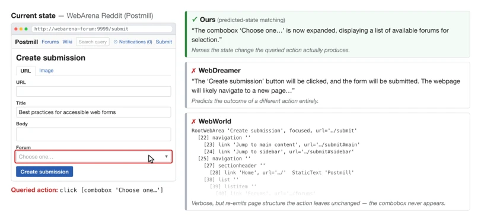
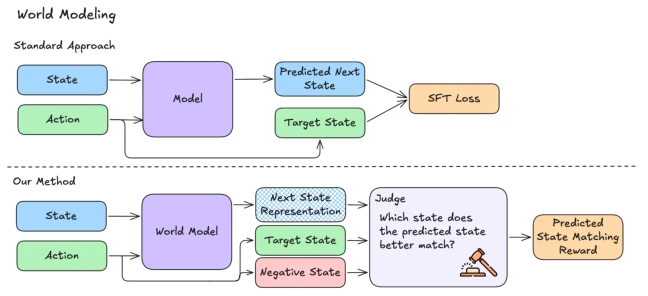
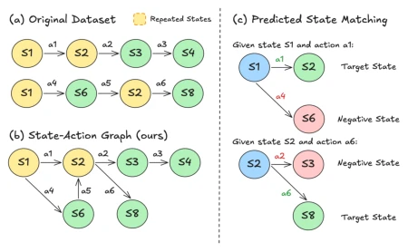

Kelvin Li, Dhruv Pendharkar, Anish Pahilajani, Chuyi Shang, Leon Oks, Leonid Karlinsky abspdf
论文点评Review
这篇论文给 Web Agent 的世界模型来了个“去格式化”手术。以前的模型像复读机，拼命模仿 HTML 或 AXTree 的固定格式，结果往往忽略了动作带来的关键差异。作者提出“预测状态匹配”，让模型学会“找不同”而不是“抄作业”。这思路挺对路，毕竟 Agent 选动作时，关心的是“点了这个按钮页面会变啥”，而不是“页面代码长啥样”。不过，依赖 LLM Judge 来打分匹配度，难免有“自说自话”的嫌疑，毕竟 Judge 也是模型。虽然实验在 WebArena 上效果不错，但泛化性还得看后续。总的来说，这是一次把世界模型从“生成器”变成“判别器”的有趣尝试，虽然没完全摆脱对大模型的依赖，但方向值得点赞。
—
研究动机Motivation
Web 导航本质是部分可观测的多步决策问题 (Gu et al., 2025; Chae et al., 2025a)。现有 Agent 多依赖反应式预测，缺乏对替代动作的比较。引入世界模型进行 Test-time Action Selection 虽能评估后果，但现有世界模型训练目标与下游 Ranker 错位。例如 WebDreamer (Gu et al., 2025) 和 WebWorld (Xiao et al., 2026) 采用监督式下一状态预测，强制生成固定格式（如文本摘要或 AXTree）。这种目标导致模型可能生成与动作无关的冗余信息，无法有效区分不同动作带来的状态差异。对于动作选择，核心需求是预测状态能区分竞争动作的后果，而非复现特定格式。现有线性轨迹数据集也缺乏同一状态下的多动作分支监督，导致模型难以学习动作与状态变化的因果关系。
—

Figure 1: Qualitative example of predicted next-state representations at a single decision point in the WebArena Reddit environment. Given the current state and queried action, our predicted-state-matching world model identifies the specific state change produced by the action. A textual-summary method, WebDreamer (Gu et al., 2025), instead describes the outcome of a different action, while a full structured-state method, WebWorld (Xiao et al., 2026), emits a long AXTree-style representation that largely repeats page structure unchanged by the queried action. The browser pane is rendered from the recorded accessibility tree.
方法Method
整体流程分为数据构建、训练目标与下游应用。首先，利用 WebArena 的 Go-Browse 轨迹构建分支数据集 (Gandhi and Neubig, 2026)。将重复状态合并为状态 - 动作图，每个状态节点包含多个候选动作及其真实下一状态，形成分支决策点。其次，提出预测状态匹配（Predicted-state matching）训练目标。模型输入当前状态和查询动作，生成文本预测表示。训练时，使用固定 Judge（如 Qwen3-32B）接收预测表示和两个候选状态（真实状态 vs 替代状态），Judge 需选出匹配预测表示的状态。奖励函数基于匹配正确性，鼓励模型生成包含动作关键差异的表示，而非固定格式。最后，将生成的预测状态表示作为额外输入，增强 Process Reward Model (PRM) 或 Ranker 的决策能力。该方法解耦了状态表示与格式，使模型能动态调整抽象层级，专注于动作相关的状态变化特征。
—

Figure 2: Supervised next-state prediction trains a world model to generate a fixed target representation. Predicted- state matching instead trains the generated representation to distinguish the true resulting state of a queried action from alternative next states reached by other actions.

Figure 3: Construction of branching decision points from Go-Browse trajectories. (a) The original data is organized as linear trajectories, but some web states are repeated across trajectories. (b) We merge repeated states into a state-action graph, where outgoing edges from the same state correspond to different executed actions and their observed next states. (c) For predicted- state matching, each branching state yields pairwise examples: given a queried action, the world model must produce a representation that distinguishes its true re- sulting state from an alternative next state reached by another action from the same current state.